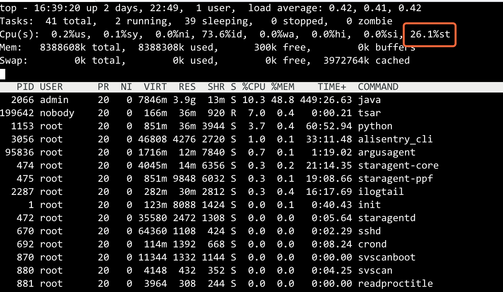

<!DOCTYPE html>
<html lang="en">

<head>
  <meta charset="utf-8" />
    
  <meta name="description" content="Frank Zhou的技术博客-A Tech Blog For Frank Zhou" />
  
  <meta name="viewport" content="width=device-width, initial-scale=1, maximum-scale=1" />
  <title>
    Java异常诊断工具 |  Frank Zhou的博客
  </title>
  <meta name="generator" content="hexo-theme-yilia-plus">
  
  <link rel="shortcut icon" href="/favicon.ico" />
  
  
<link rel="stylesheet" href="/tech-blog/css/style.css">

  
<script src="/tech-blog/js/pace.min.js"></script>


  

  

</head>

</html>

<body>
  <div id="app">
    <main class="content">
      <section class="outer">
  <article id="post-Java异常诊断工具" class="article article-type-post" itemscope
  itemprop="blogPost" data-scroll-reveal>

  <div class="article-inner">
    
    <header class="article-header">
       
<h1 class="article-title sea-center" style="border-left:0" itemprop="name">
  Java异常诊断工具
</h1>
  

    </header>
    

    
    <div class="article-meta">
      <a href="/tech-blog/2020/04/06/Java%E5%BC%82%E5%B8%B8%E8%AF%8A%E6%96%AD%E5%B7%A5%E5%85%B7/" class="article-date">
  <time datetime="2020-04-06T12:33:24.000Z" itemprop="datePublished">2020-04-06</time>
</a>
      
  <div class="article-category">
    <a class="article-category-link" href="/tech-blog/categories/%E6%8A%80%E6%9C%AF/">技术</a>
  </div>

      
      
<div class="word_count">
    <span class="post-time">
        <span class="post-meta-item-icon">
            <i class="ri-quill-pen-line"></i>
            <span class="post-meta-item-text"> 字数统计:</span>
            <span class="post-count">6.6k字</span>
        </span>
    </span>

    <span class="post-time">
        &nbsp; | &nbsp;
        <span class="post-meta-item-icon">
            <i class="ri-book-open-line"></i>
            <span class="post-meta-item-text"> 阅读时长≈</span>
            <span class="post-count">24分钟</span>
        </span>
    </span>
</div>

      
    </div>
    

    
    
    <div class="tocbot"></div>


    

    
    <div class="article-entry" itemprop="articleBody">
      


      

      
      <h1 id="系统异常基本排查思路"><a href="#系统异常基本排查思路" class="headerlink" title="系统异常基本排查思路"></a>系统异常基本排查思路</h1><h2 id="CPU-使用率分析和异常排查"><a href="#CPU-使用率分析和异常排查" class="headerlink" title="CPU 使用率分析和异常排查"></a>CPU 使用率分析和异常排查</h2><h3 id="基础知识"><a href="#基础知识" class="headerlink" title="基础知识"></a>基础知识</h3><h5 id="CPU时间片"><a href="#CPU时间片" class="headerlink" title="CPU时间片"></a><strong>CPU时间片</strong></h5><p>CPU 时间片，即 CPU 分配给各个程序的时间，每个线程被分配一个时间段，称作它的时间片，即该进程允许运行的时间，使各个程序从表面上看是同时进行的。如果在时间片结束时进程还在运行，则 CPU 将被剥夺并分配给另一个进程。如果进程在时间片结束前阻塞或结束，则 CPU 当即进行切换，而不会造成 CPU 资源浪费。</p>
<p>目前，计算机搭载的操作系统，如 Windows、Linux 等都是“多任务操作系统”，即可以“同时”执行多个任务，对于用户来说，就是可以“同时”执行多个应用程序，如“同时”看视屏和 QQ 聊天。事实上，这里的“同时”并不是真正意义上的同时。在此，以只有一个单核 CPU 的计算机为例进行说明，由于只有一个 CPU 内核，任何时刻都只能做一件事，那么，如何实现“多任务”呢？一个简明的策略就是引入时间片，每个程序轮流执行，这个时间片很短（Linux 系统为 5ms-800ms，Windows 系统与版本有关，但也是毫秒级），以至于用户无法感知，直观上如同多个程序同时在运行。</p>
<h5 id="CPU-使用率"><a href="#CPU-使用率" class="headerlink" title="CPU 使用率"></a><strong>CPU 使用率</strong></h5><p>CPU 使用率，即运行的程序占用 CPU 时间片的情况，</p>
<p>计算公式为：<strong>CPU 使用率 = CPU 时间片被程序使用的时间 / 总时间。</strong></p>
<p>目前，多任务操作系统对 CPU 都是分时间片使用的：<strong>比如 A 进程占用 10ms，然后 B 进程占用 30ms，然后空闲 60ms，再又是 A 进程占 10ms，B 进程占 30ms，空闲 60ms；如果在一段时间内都是如此，那么这段时间内 CPU 的占用率为 40%。</strong></p>
<p>大多数操作系统的 CPU 占用率分为用户态 CPU 使用率和系统态 CPU 使用率。用户态 CPU 使用率是指执行应用程序代码的时间占总 CPU 时间的百分比。相比而言，系统态 CPU 使用率是指应用执行操作系统调用的时间占总 CPU 时间的百分比。<strong>系统态的 CPU 使用率高意味着共享资源有竞争或者 I/O 设备之间有大量的交互。</strong></p>
<h2 id="查看CPU使用率"><a href="#查看CPU使用率" class="headerlink" title="查看CPU使用率"></a>查看CPU使用率</h2><h3 id="top命令"><a href="#top命令" class="headerlink" title="top命令"></a>top命令</h3><p>top 命令是 Linux 下常用的性能分析工具，能够实时显示系统 CPU，内存，Load，进程等信息，类似于 Windows 的任务管理器。如下所示，使用 top 命令执行结果：</p>
<p><strong>参数解释：</strong></p>
<ul>
<li>0.7% us：用户空间占用 CPU 百分比；</li>
<li>0.3% sy ：内核、内核进程占用 CPU 的比率；</li>
<li>0.0% ni ：如果一些用户进程修改过优先级，这里显示这些进程占用 CPU 时间的比率；</li>
<li>48.1% id： 空闲 CPU 百分比；</li>
<li>0.0% wa ：CPU 等待执行 I/O 操作的时间比率，该指标可以用来排查磁盘 I/O 的问题，通常结合 wa 和 id 判断；</li>
<li>0.0%hi：硬件 CPU 中断占用百分比；</li>
<li>0.0%si：软件 CPU 中断占用百分比；</li>
<li>50.9%st：物理机上其它虚拟机占用 CPU 的时间百分比；</li>
</ul>
<h2 id="查看CPU信息"><a href="#查看CPU信息" class="headerlink" title="查看CPU信息"></a>查看CPU信息</h2><p>命令：cat /proc/cpuinfo，执行结果如下，宿主机是 2 个核心。</p>
<p><strong>参数解释：</strong></p>
<ul>
<li>processor：系统中逻辑处理核的编号;</li>
<li>vendor_id：CPU 制造商;</li>
<li>cpu family：CPU 产品系列代号;</li>
<li>model：CPU 属于其系列中的哪一代的代号;</li>
<li>model name：CPU 属于的名字及其编号、标称主频;</li>
<li>stepping：CPU 属于制作更新版本;</li>
<li>cpu MHz：CPU 的实际使用主频;</li>
<li>cache size ：CPU 二级缓存大小;</li>
<li>physical id ：单个 CPU 的标号;</li>
<li>siblings ：单个 CPU 逻辑物理核数;</li>
<li>core id ：当前物理核在其所处 CPU 中的编号，这个编号不一定连续;</li>
<li>cpu cores ：该逻辑核所处 CPU 的物理核数;</li>
<li>apicid ：用来区分不同逻辑核的编号，系统中每个逻辑核的此编号必然不同，此编号不一定连续;</li>
<li>fpu ：是否具有浮点运算单元（Floating Point Unit）；</li>
<li>fpu_exception ：是否支持浮点计算异常；</li>
<li>cpuid level ：执行 cpuid 指令前，eax 寄存器中的值，根据不同的值 cpuid 指令会返回不同的内容；</li>
<li>wp ：表明当前 CPU 是否在内核态支持对用户空间的写保护（Write Protection）；</li>
<li>flags ：当前 CPU 支持的功能；</li>
<li>bogomips ：在系统内核启动时粗略测算的 CPU 速度（Million Instructions Per Second）；</li>
<li>clflush size ：每次刷新缓存的大小单位；</li>
<li>cache_alignment ：缓存地址对齐单位；</li>
<li>address sizes ：可访问地址空间位数；</li>
<li>power management ：对能源管理的支持。</li>
</ul>
<h2 id="定位CPU突然飙升的思路"><a href="#定位CPU突然飙升的思路" class="headerlink" title="定位CPU突然飙升的思路"></a>定位CPU突然飙升的思路</h2><h5 id="常见原因"><a href="#常见原因" class="headerlink" title="常见原因"></a><strong>常见原因</strong></h5><ul>
<li>宿主机 CPU“超卖”；</li>
<li>内存问题导致大量 Full GC ；</li>
<li>代码存在死循环。</li>
<li>线程开辟过多</li>
</ul>
<h5 id="宿主机-CPU-超卖"><a href="#宿主机-CPU-超卖" class="headerlink" title="宿主机 CPU 超卖"></a><strong>宿主机 CPU 超卖</strong></h5><p>执行 top 命令，结果如下图所示：</p>
<p></p>
<p>top 命令输出的结果信息中，cpu st 的值，即宿主机 CPU 时间片分配给宿主机上其它虚拟机时间占比。如果 st 使用率较大，则 CPU 占用飙升是由于宿主机“超卖”导致，所谓“超卖”是一种通俗的说法，指的是宿主机 CPU 时间片分配给宿主机上其它虚拟机的比重过高（注意：截图中所示的占比并没有达到“超卖”的程度，仅作为示例）。</p>
<h5 id="内存问题，导致大量-Full-GC"><a href="#内存问题，导致大量-Full-GC" class="headerlink" title="内存问题，导致大量 Full GC"></a><strong>内存问题，导致大量 Full GC</strong></h5><p>对于 Java 应用而言，Full GC 是一个非常重要的指标，互联网企业通常都有自研的监控预警系统，用于监控 Full GC、堆内存、CPU 占用率等指标。如果企业有自研的监控系统，很容易确认是否为 Full GC 导致 CPU 飙高，如果没有这样的系统，那就需要工程师手动确认了，步骤如下：</p>
<p>Step1：通过 top 命令查看当前机器的 CPU 使用情况，如下截图（这里仅作为举例，CPU 使用率并没有飙升）。通过 top 命令输出的结果，可以看到 PID 为 9532 的 Java 进程占用 CPU 最多，可以作为怀疑对象，进一步“侦查”。需要说明的是，这里仅作为举例，截图中占用 CPU 最高的 Java 进程也就 4.0%，在真实的应用场景中，如果是频繁 Full GC 导致的 CPU 飙高，占用率要大得多。</p>
<p>Step2：通过 jstat 命令查看“有嫌疑”的 Java 进程的 GC 情况，常用的命令形式如下： jstat -gcutil 【PID】 1000 100，作用为：每 1000ms 打印一次 gc 统计情况，一共打印 100 次。</p>
<p><strong>参数解释：</strong></p>
<ul>
<li><p>S0 Survivor space 0 的利用率；</p>
</li>
<li><p>S1 Survivor space 1 的利用率；</p>
</li>
<li><p>E Eden space 的利用率；</p>
</li>
<li><p>O Old space 的利用率；</p>
</li>
<li><p>P Permanent space 的利用率；</p>
</li>
<li><p>YGC young gc 数量；</p>
</li>
<li><p>YGCT young gc 时间；</p>
</li>
<li><p>FGC Full gc 数量；</p>
</li>
<li><p>FGCT Full gc 时间；</p>
</li>
<li><p>GCT 所有的 gc 时间，(YGCT + FGCT)；</p>
<p>通过查看 Full GC 和 Young GC 次数，如果发现“嫌疑”进程存在频繁的 Full GC，我们可以进一步通过 Dump 应用的堆内存，对堆内存进行分析，定位异常代码。</p>
</li>
</ul>
<p>Step3：通过 Jmap 命令 Dump 有“嫌疑”的 Java 进程（应用程序）的堆快照和对象的统计信息。命令形式如下：</p>
<p><code>例1: jmap -histo 2927 &gt; a.txt 统计 PID 为 2927 的 Java 程序的对象统计信息</code></p>
<p><code>例2: jmap -dump:format=b,file=a.txt 统计 PID 为 2927 的 Java 程序的当前堆快照信息</code></p>
<p>Step4：通过 MAT（Memory Analysis Tools）工具对堆快照和对象的统计信息进行分析，定位问题，关于 MAT 工具的使用方法可以查看博客<a href="https://blog.csdn.net/jin_kwok/article/details/80326088。" target="_blank" rel="noopener">https://blog.csdn.net/jin_kwok/article/details/80326088。</a></p>
<h5 id="代码存在死循环"><a href="#代码存在死循环" class="headerlink" title="代码存在死循环"></a><strong>代码存在死循环</strong></h5><p>需要先定位到占用大量 CPU 时间片的 Java 线程，然后排查对应线程的代码定位原因，具体步骤如下：</p>
<p>Step1. 使用 top 命令找到 CPU 占用最高的线程（PID 为进程 ID），看一下是否为 Java 线程。</p>
<p>Step2. 确定有“嫌疑”的 Java 进程后，进一步查看该进程中 CPU 占比靠前的 Java 线程，其中的 PID 为子进程 ID，即 Java 线程 ID。命令如下：</p>
<figure class="highlight plain"><table><tr><td class="gutter"><pre><span class="line">1</span><br></pre></td><td class="code"><pre><span class="line">top -p 2066 -H，说明：-H 指显示线程，-p 是指定进程</span><br></pre></td></tr></table></figure>

<p>从打印的结果可以看出，“嫌疑”进程中 CPU 占比较高的 Java 线程有好几个，通常我们只能逐个排查。</p>
<p>Step3. 获得 Java 线程 ID 的十六进制值。通过 jstack 命令获取的线程堆栈信息中，线程 ID 是十六进制形式的，因此，为了便于搜索指定线程的相关信息，我们需要先对 top 命令获得的线程 ID 进行预处理，即转化为十六进制形式。命令如下：printf “%x” 3215，即打印十进制数 3215 转化为十六进制的值。</p>
<figure class="highlight shell"><table><tr><td class="gutter"><pre><span class="line">1</span><br><span class="line">2</span><br><span class="line">3</span><br></pre></td><td class="code"><pre><span class="line">printf "%x\n" 3215</span><br><span class="line"></span><br><span class="line">c8f</span><br></pre></td></tr></table></figure>

<p>Step4. 通过 jstack 命令获取占用资源异常的线程栈。</p>
<p>可暂时保存到一个文件中查看 jstack 3215 &gt; jstack.3215.log，在生成的文件中，通过搜索线程ID的十六进制值找到对应的信息。为了快速定位问题，通常，我们会直接通过命令过滤出需要的信息，命令形式如下：</p>
<figure class="highlight shell"><table><tr><td class="gutter"><pre><span class="line">1</span><br></pre></td><td class="code"><pre><span class="line">jstack 2066 | grep c8f</span><br></pre></td></tr></table></figure>

<p><strong>注意：</strong></p>
<ul>
<li><p>jstack 的对象是 Java 进程的 PID，而不是 Java 线程的 PID；</p>
</li>
<li><p>尽量不要使用 jstack -F 命令，可能会导致应用的所有线程挂起。</p>
<p><strong>关于 jstack 命令的补充：</strong></p>
<figure class="highlight plain"><table><tr><td class="gutter"><pre><span class="line">1</span><br><span class="line">2</span><br><span class="line">3</span><br><span class="line">4</span><br><span class="line">5</span><br><span class="line">6</span><br><span class="line">7</span><br><span class="line">8</span><br></pre></td><td class="code"><pre><span class="line">jstack 命令格式: jstack [ option ] pid</span><br><span class="line"></span><br><span class="line">option参数说明:</span><br><span class="line">-F jstack [-l] pid无法响应时，强制打印堆栈;</span><br><span class="line">-l l长列表. 打印关于锁的附加信息,例如属于java.util.concurrent的ownable synchronizers列表;</span><br><span class="line">-m 混合模式输出(包括java和本地c&#x2F;c++片段)堆栈;</span><br><span class="line"></span><br><span class="line">pid: java应用程序的进程号;</span><br></pre></td></tr></table></figure>

</li>
</ul>
<h3 id="系统负载（Load）分析和异常排查"><a href="#系统负载（Load）分析和异常排查" class="headerlink" title="系统负载（Load）分析和异常排查"></a>系统负载（Load）分析和异常排查</h3><h4 id="预备知识：系统负载"><a href="#预备知识：系统负载" class="headerlink" title="预备知识：系统负载"></a>预备知识：系统负载</h4><p>系统负载（Load）是指在一段时间内 CPU 正在处理以及等待 CPU 处理的进程数之和的统计信息，也就是 CPU 使用队列的长度的统计信息。</p>
<p>当 CPU 完全空闲的时候，平均负荷为 0；当 CPU 工作量饱和的时候，平均负荷为 1。举个例子，如果 CPU 每分钟最多处理 100 个进程，那么，系统负荷 0.2 就意味着 CPU 在这 1 分钟里只处理 20 个进程；系统负荷 1.0，意味着 CPU 在这 1 分钟里正好处理 100 个进程；系统负荷 1.7，意味着除了 CPU 正在处理的 100 个进程以外还有 70 个进程正排队等着 CPU 处理。</p>
<h5 id="系统负载（Load）与系统的繁忙程度"><a href="#系统负载（Load）与系统的繁忙程度" class="headerlink" title="系统负载（Load）与系统的繁忙程度"></a><strong>系统负载（Load）与系统的繁忙程度</strong></h5><p>在此，以<strong>单核 CPU</strong> 为例，解读系统负载（Load）与系统的繁忙程度的关系，注意关键词——单核 CPU。</p>
<ul>
<li>Load&lt;1：没有等待；</li>
<li>Load==1：系统已无额外的资源跑更多的进程了；</li>
<li>Load&gt;1：进程都堵着等待资源。</li>
</ul>
<p><strong>需要警惕的</strong></p>
<ul>
<li>Load &lt; 0.7 时：系统很闲，要考虑多部署一些服务；</li>
<li>0.7 &lt; Load &lt; 1 时：系统状态不错 ；</li>
<li>Load == 1 时：系统马上要处理不多来了，赶紧找一下原因；</li>
<li>Load &gt; 5 时：系统已经非常繁忙了。</li>
</ul>
<p><strong>不同 Load 值说明的问题</strong></p>
<ul>
<li>1 分钟 Load&gt;5，5 分钟 Load&lt;1，15 分钟 Load&lt;1</li>
</ul>
<p>短期内繁忙，中长期空闲，初步判断是一个抖动或者是拥塞前兆</p>
<ul>
<li>1 分钟 Load&gt;5，5 分钟 Load&gt;1，15 分钟 Load&lt;1</li>
</ul>
<p>短期内繁忙，中期内紧张，很可能是一个拥塞的开始</p>
<ul>
<li>1 分钟 Load&gt;5，5 分钟 Load&gt;5，15 分钟 Load&gt;5</li>
</ul>
<p>短中长期都繁忙，系统正在拥塞</p>
<ul>
<li>1 分钟 Load&lt;1，5 分钟 Load&gt;1，15 分钟 Load&gt;5</li>
</ul>
<p>短期内空闲，中长期繁忙，不用紧张，系统拥塞正在好转</p>
<h5 id="多核或者单核多处理器"><a href="#多核或者单核多处理器" class="headerlink" title="多核或者单核多处理器"></a><strong>多核或者单核多处理器</strong></h5><p><strong>单核多 CPU：</strong></p>
<p>如果计算机有 2 个单核 CPU，负载能力又是什么情况呢？2 个 CPU，意味着电脑的处理能力增加一倍，能够同时处理的进程数量也增加一倍。如果用大桥来类比，两个 CPU 就意味着大桥有两根车道了，通车能力翻倍了。所以，2 个 CPU 表明系统负荷可以达到 2.0，此时每个 CPU 都达到 100% 的工作量。推广开来，N 个单核 CPU 的计算机，可接受的系统负荷最大为：N*1.0。</p>
<p><strong>多核 CPU：</strong></p>
<p>目前，计算机所使用的 CPU 基本都是多核的，这类 CPU 被称为多核 CPU。在系统负载方面，多核 CPU 与多 CPU 效果类似，所以考虑系统负载时，必须考虑计算机有几个 CPU、每个 CPU 有几个核心。然后，把系统负载除以总的核心数，只要每个核心的负荷不超过 1.0，就表明计算机正常运行。对于具有 N 个 CPU，每个 CPU 具有 M 个核心的计算机，其系统负载最大为：N<em>M</em>1.0。</p>
<h5 id="CPU-使用率与负载（Load）的区别"><a href="#CPU-使用率与负载（Load）的区别" class="headerlink" title="CPU 使用率与负载（Load）的区别"></a><strong>CPU 使用率与负载（Load）的区别</strong></h5><p>这里要区别 CPU 负载和 CPU 利用率，它们是不同的两个概念。</p>
<p>CPU 利用率：显示的是程序在运行期间实时占用的 CPU 百分比，这是对一个时间段内 CPU 使用状况的统计，通过这个指标可以看出在某一个时间段内 CPU 被占用的情况， 如果被占用时间很高，那么就需要考虑 CPU 是否已经处于超负荷运作。</p>
<p>CPU 负载：显示的是在一段时间内 CPU 正在处理以及等待 CPU 处理的进程数之和的统计信息，也就是 CPU 使用队列的长度的统计信息。</p>
<p>简单理解，一个是 CPU 的实时使用情况，一个是 CPU 的当前以及未来一段时间的使用情况；</p>
<h4 id="查看系统负载"><a href="#查看系统负载" class="headerlink" title="查看系统负载"></a>查看系统负载</h4><h5 id="uptime-命令"><a href="#uptime-命令" class="headerlink" title="uptime 命令"></a><strong>uptime 命令</strong></h5><p><strong>关键参数解释：</strong> load average: 0.61，0.57，0.57 就是负载信息，分别表示 1 分钟、5 分钟、15 分钟内系统的平均负荷。</p>
<p><strong>其它参数解释：</strong> 11:46:19：系统当前时间 up 6 days, 18:54 ：系统开机到现在经过了 6 天</p>
<h5 id="w-命令"><a href="#w-命令" class="headerlink" title="w 命令"></a><strong>w 命令</strong></h5><p><strong>关键参数解释：</strong></p>
<p>load average: 0.74，0.61，0.59 就是负载信息，分别表示 1 分钟、5 分钟、15 分钟内系统的平均负荷。</p>
<p><strong>其它参数解释：</strong></p>
<ul>
<li><p>USER —登录的用户名；</p>
</li>
<li><p>TTY —登录后系统分配的终端号；</p>
</li>
<li><p>FROM—远程主机名，即从哪儿登录来的；</p>
</li>
<li><p>LOGIN@—何时登录；</p>
</li>
<li><p>IDLE—空闲了多长时间，表示用户闲置的时间。这是一个计时器，一旦用户执行任何操作，该计时器便会被重置；</p>
</li>
<li><p>JCPU—和该终端（tty）连接的所有进程占用的时间，这个时间里并不包括过去的后台作业时间，但却包括当前正在运行的后台作业所占用的时间；</p>
</li>
<li><p>PCPU—指当前进程（即在 WHAT 项中显示的进程）所占用的时间；</p>
</li>
<li><p>WHAT—当前正在运行进程的命令行。</p>
<h4 id="计算机正常负载范围"><a href="#计算机正常负载范围" class="headerlink" title="计算机正常负载范围"></a>计算机正常负载范围</h4><p>以单核 CPU 为例，经验法则是这样的：</p>
<ol>
<li><p>当系统负荷持续大于 0.7，你必须开始调查了，问题出在哪里，防止情况恶化；</p>
</li>
<li><p>当系统负荷持续大于 1.0，你必须动手寻找解决办法，把这个值降下来；</p>
</li>
<li><p>当系统负荷达到 5.0，就表明你的系统有很严重的问题，长时间没有响应，或者接近死机了。你不应该让系统达到这个值。</p>
<h4 id="CPU-使用率低而负载高"><a href="#CPU-使用率低而负载高" class="headerlink" title="CPU 使用率低而负载高"></a>CPU 使用率低而负载高</h4><p>主要原因是等待磁盘 I/O 的进程过多，导致进程队列长度过大，但是 CPU 运行的进程却很少，这样就导致负载过大，但 CPU 使用率低。</p>
<h5 id="常见场景"><a href="#常见场景" class="headerlink" title="常见场景"></a><strong>常见场景</strong></h5><ul>
<li>磁盘读写请求过多就会导致大量 I/O 等待；</li>
<li>MySQL 中存在没有索引的语句或存在死锁；；</li>
<li>外接硬盘故障，常见有挂载了 NFS，但是 NFS Server 故障。</li>
</ul>
<h5 id="场景分析"><a href="#场景分析" class="headerlink" title="场景分析"></a><strong>场景分析</strong></h5><p><strong>磁盘读写请求过多就会导致大量 I/O 等待</strong></p>
<p>CPU 的工作效率要高于磁盘，而进程在 CPU 上面运行需要访问磁盘文件，这个时候 CPU 会向内核发起调用文件的请求，让内核去磁盘取文件，这个时候会切换到其他进程或者空闲，这个任务就会转换为不可中断睡眠状态。当这种读写请求过多就会导致不可中断睡眠状态的进程过多，从而导致负载高，CPU 低的情况。</p>
<p><strong>MySQL 中存在没有索引的语句或存在死锁</strong></p>
<p>MySQL 的数据是存储在硬盘中，如果需进行 SQL 查询，要先把数据从磁盘加载到内存中。当在数据特别大的时候，如果执行的 SQL 语句没有索引，就会造成扫描表的行数过大导致 I/O 阻塞，或者是语句中存在死锁，也会造成 I/O 阻塞，从而导致不可中断睡眠进程过多，导致负载过大。</p>
<p><strong>外接硬盘故障，常见有挂载了 NFS，但是 NFS Server 故障</strong></p>
<p>假如系统挂载了外接硬盘，如 NFS 共享存储，经常会有大量的读写请求去访问 NFS 存储的文件，如果这个时候 NFS Server 故障，那么就会导致进程读写请求一直获取不到资源，从而进程一直是不可中断状态，造成负载很高。</p>
</li>
</ol>
</li>
</ul>
<h2 id="内存使用率异常"><a href="#内存使用率异常" class="headerlink" title="内存使用率异常"></a>内存使用率异常</h2><p>​         预备知识：内存</p>
<p>内存是计算机中重要的部件之一，它是与 CPU 进行沟通的桥梁。计算机中所有程序的运行都是在内存中进行的，因此内存的性能对计算机的影响非常大。一旦内存使用出现异常，对程序会产生重大影响。内存也被称为内存储器，其作用是用于暂时存放 CPU 中的运算数据，以及与硬盘等外部存储器交换的数据。</p>
<h5 id="物理内存"><a href="#物理内存" class="headerlink" title="物理内存"></a><strong>物理内存</strong></h5><p>物理内存指通过物理内存条而获得的内存空间，即随机存取存储器（Random Access Memory，RAM），是与 CPU 直接交换数据的内部存储器，也叫主存（内存）。</p>
<h5 id="虚拟内存"><a href="#虚拟内存" class="headerlink" title="虚拟内存"></a><strong>虚拟内存</strong></h5><p>虚拟内存是计算机系统内存管理的一种技术。它使得应用程序认为它拥有连续可用的内存（一个连续完整的地址空间），而实际上，它通常是被分隔成多个物理内存碎片，还有部分暂时存储在外部磁盘存储器上，在需要时进行数据交换（也就是说，当物理内存不足时，可能会借用磁盘空间来充当内存使用）。与没有使用虚拟内存技术的系统相比，使用这种技术的系统使得大型程序的编写变得更容易，对真正的物理内存（例如 RAM）的使用也更有效率。</p>
<h5 id="Swap-分区"><a href="#Swap-分区" class="headerlink" title="Swap 分区"></a><strong>Swap 分区</strong></h5><p>Swap 分区（即交换区）在系统的物理内存不够用的时候（没有了 buffers 和 cache 时），可以临时存放使用率不高的内存分页，把这一部分物理内存释放出来，以供当前运行的程序使用。那些被释放的空间可能来自一些很长时间没有什么操作的程序，这些被释放的空间被临时保存到 Swap 分区中，等到那些程序要运行时，再从 Swap 分区中恢复保存的数据到内存中。</p>
<p>对于线上的应用服务器，通常都不设置 swap，而是通过限定 jvm 内存小于物理内存的方式控制内存大小。</p>
<p><strong>参数解释：</strong></p>
<ul>
<li>Mem 是内存的使用情况；</li>
<li>-/+ buffers/cache 是物理内存的缓存统计情况；</li>
<li>Swap 是交换空间的使用情况。</li>
</ul>
<p><strong>列（Mem 行）：</strong></p>
<ul>
<li>total 4194304，表示物理内存总大小；</li>
<li>used 4172552，表示总计分配给缓存（包含 buffers 与cache ）使用的数量，其中可能部分缓存并未实际使用；</li>
<li>free 21752，表示未被分配的内存；</li>
<li>shared 0，共享内存，一般系统不会用到；</li>
<li>buffers 0，系统分配但未被使用的 buffers 数量；</li>
<li>cached 1773124，系统分配但未被使用的 cache 数量。</li>
</ul>
<p><strong>列（-/+ buffers/cache 行）：</strong></p>
<ul>
<li>Used 2399428，表示实际使用的 buffers 与cache 总量，也是实际使用的内存总量；</li>
<li>Free 1794876，未被使用的 buffers 与cache 和未被分配的内存之和，这就是系统当前实际可用内存。</li>
</ul>
<p><strong>数据间的关系：</strong></p>
<ul>
<li>used（-/+ buffers/cache） = used（Mem） – cached（Mem） – buffers（Mem）；</li>
<li>free（-/+ buffers/cache） = free（Mem） + cached （Mem）+ buffers（Mem）；</li>
<li>used（mem）为系统已分配内存大小；</li>
<li>free（-/+ buffers/cache）为系统实际可用内存大小；</li>
</ul>
<p>buffers 和 cache 的区别：</p>
<figure class="highlight plain"><table><tr><td class="gutter"><pre><span class="line">1</span><br><span class="line">2</span><br></pre></td><td class="code"><pre><span class="line">A buffer is something that has yet to be “written” to disk. </span><br><span class="line">A **cache** **is** something that has been “**read**” **from** the disk **and** **stored** **for** later use.</span><br></pre></td></tr></table></figure>

<h4 id="内存占用飙高及常见定位方法"><a href="#内存占用飙高及常见定位方法" class="headerlink" title="内存占用飙高及常见定位方法"></a>内存占用飙高及常见定位方法</h4><h5 id="常见原因-1"><a href="#常见原因-1" class="headerlink" title="常见原因"></a><strong>常见原因</strong></h5><ul>
<li>内存溢出</li>
<li>内存泄露</li>
<li>堆外内存使用不当</li>
</ul>
<h5 id="原因排查-内存溢出"><a href="#原因排查-内存溢出" class="headerlink" title="原因排查-内存溢出"></a><strong>原因排查-内存溢出</strong></h5><p>内存溢出：指程序运行过程中无法申请到足够的内存而导致的一种错误。内存溢出通常发生于 OLD 段或 Perm 段垃圾回收后，仍然无内存空间容纳新的 Java 对象的情况。</p>
<p><strong>1. 堆内存溢出（outOfMemoryError：java heap space）</strong></p>
<p>在 JVM 规范中，堆中的内存是用来生成对象实例和数组的。如果细分，堆内存还可以分为年轻代和年老代，年轻代包括一个 Eden 区和两个 Survivor 区。当生成新对象时，内存的申请过程如下：</p>
<ol>
<li>JVM 先尝试在 Eden 区分配新建对象所需的内存；</li>
<li>如果内存大小足够，申请结束，否则下一步；</li>
<li>JVM 启动 youngGC，试图将 Eden 区中不活跃的对象释放掉，释放后若 Eden 空间仍然不足以放入新对象，则试图将部分 Eden 中活跃对象放入 Survivor 区；</li>
<li>Survivor 区被用来作为 Eden 及 Old 的中间交换区域，当 Old 区空间足够时，Survivor 区的对象会被移到 Old 区，否则会被保留在 Survivor 区；</li>
<li>当 Old 区空间不够时，JVM 会在 Old 区进行 Full GC；</li>
<li>Full GC 后，若 Survivor 及 Old 区仍然无法存放从 Eden 复制过来的部分对象，导致 JVM 无法在 Eden 区为新对象创建内存区域，则出现”out of memory 错误”：outOfMemoryError：java heap space。</li>
</ol>
<p><strong>2. 方法区内存溢出（outOfMemoryError：permgem space）</strong></p>
<p>在 JVM 规范中，方法区主要存放的是类信息、常量、静态变量等。所以如果程序加载的类过多，或者使用反射、cglib 等这种动态代理生成类的技术，就可能导致该区发生内存溢出，一般该区发生内存溢出时的错误信息为：outOfMemoryError：permgem space。</p>
<p><strong>3. 线程栈溢出（java.lang.StackOverflowError）</strong></p>
<p>线程栈时线程独有的一块内存结构，所以线程栈发生问题必定是某个线程运行时产生的错误。一般线程栈溢出是由于递归太深或方法调用层级过多导致的。发生栈溢出的错误信息为：java.lang.StackOverflowError。</p>
<h5 id="原因排查-内存泄露"><a href="#原因排查-内存泄露" class="headerlink" title="原因排查-内存泄露"></a><strong>原因排查-内存泄露</strong></h5><p>内存泄露是指程序中动态分配内存给一些临时对象，代码段运行结束后，这些对象已经没有被使用，但由于 GC Roots 可达，没有被 GC 回收，始终占用内存。简单来说即被分配的对象无用但可达，这种问题一般是代码设计存在缺陷导致的。常用的定位步骤如下（结合例子说明）：</p>
<p>Step1. 使用 top 命令，查看占用内存较高的进程 ID</p>
<p>发现 PID 为 2544 的进程占用内存 58.2%，而且是一个 Java 进程，基本断定是程序问题。</p>
<p>Step2. 使用 jmap 查看内存情况，并分析是否存在内存泄露。</p>
<figure class="highlight plain"><table><tr><td class="gutter"><pre><span class="line">1</span><br><span class="line">2</span><br><span class="line">3</span><br><span class="line">4</span><br></pre></td><td class="code"><pre><span class="line">jmap -heap 5442：查看java 堆（heap）使用情况</span><br><span class="line">jmap -histo 5442：查看堆内存(histogram)中的对象数量及大小 </span><br><span class="line">jmap -histo:live 5442：JVM会先触发gc，然后再统计信息</span><br><span class="line">jmap -**dump**:**format**&#x3D;b,file&#x3D;heapDump 5442：将内存使用的详细情况输出到文件</span><br></pre></td></tr></table></figure>

<p>得到堆 dump 文件后，使用 MAT（Memory Analyzer Tool）或者 Zprofile 进行对象分析。如果有大量对象在持续被引用，并没有被释放掉，那就产生了内存泄露。排查创建该对象的代码，进行修改。</p>
<p><strong>常见的代码内存泄露的原因有：</strong></p>
<ul>
<li>长生命周期的对象持有短生命周期对象的引用 ;</li>
<li>修改 hashse t中对象的参数值，且参数是计算哈希值的字段 ;</li>
<li>机器的连接数和关闭时间设置。</li>
</ul>
<h5 id="原因排查-堆外内存使用不当"><a href="#原因排查-堆外内存使用不当" class="headerlink" title="原因排查-堆外内存使用不当"></a><strong>原因排查-堆外内存使用不当</strong></h5><p><strong>什么是堆外内存</strong></p>
<p>和堆内内存相对应，堆外内存就是把内存对象分配在 Java 虚拟机的堆以外的内存，这些内存直接受操作系统管理（而不是虚拟机），这样做的结果就是能够在一定程度上减少垃圾回收对应用程序造成的影响。</p>
<p><strong>堆外内存的优点</strong></p>
<p>减少了垃圾回收 因为垃圾回收会暂停其他的工作； 加快了复制的速度 堆内在 flush 到远程时，会先复制到直接内存，然后再发送，而堆外内存相当于省略掉了复制这个步骤。</p>
<p><strong>堆外内存的缺点</strong></p>
<p>堆外内存的缺点就是内存难以控制，使用了堆外内存就间接失去了 JVM 管理内存的可行性，改由自己来管理，当发生内存溢出时排查起来非常困难。</p>
<p><strong>堆外内存使用场景</strong></p>
<p>NIO 引入了一种基于通道与缓冲区的 IO 方式，他可以使用 Native 函数库直接分配堆外内存，然后通过一个存储在 Java 堆中的 java.nio.DirectByteBuffer 对象作为这块堆外内存的引用进行操作。</p>
<p><strong>异常解决</strong></p>
<p>DirectMemory 容量可通过 -XX:MaxDirectMemorySize 指定，如果不指定，则默认与 Java 堆的最大值（-Xmx 指定）一样。</p>

      
      <!-- reward -->
      
      <div id="reward-btn">
        打赏
      </div>
      
    </div>
    
    
      <!-- copyright -->
      
        <div class="declare">
          <ul class="post-copyright">
            <li>
              <i class="ri-copyright-line"></i>
              <strong>版权声明： </strong s>
              本博客所有文章除特别声明外，均采用 <a href="https://www.apache.org/licenses/LICENSE-2.0.html" rel="external nofollow"
                target="_blank">Apache License 2.0</a> 许可协议。转载请注明出处！
            </li>
          </ul>
        </div>
        
    <footer class="article-footer">
      
          
<div class="share-btn">
      <span class="share-sns share-outer">
        <i class="ri-share-forward-line"></i>
        分享
      </span>
      <div class="share-wrap">
        <i class="arrow"></i>
        <div class="share-icons">
          
          <a class="weibo share-sns" href="javascript:;" data-type="weibo">
            <i class="ri-weibo-fill"></i>
          </a>
          <a class="weixin share-sns wxFab" href="javascript:;" data-type="weixin">
            <i class="ri-wechat-fill"></i>
          </a>
          <a class="qq share-sns" href="javascript:;" data-type="qq">
            <i class="ri-qq-fill"></i>
          </a>
          <a class="douban share-sns" href="javascript:;" data-type="douban">
            <i class="ri-douban-line"></i>
          </a>
          <!-- <a class="qzone share-sns" href="javascript:;" data-type="qzone">
            <i class="icon icon-qzone"></i>
          </a> -->
          
          <a class="facebook share-sns" href="javascript:;" data-type="facebook">
            <i class="ri-facebook-circle-fill"></i>
          </a>
          <a class="twitter share-sns" href="javascript:;" data-type="twitter">
            <i class="ri-twitter-fill"></i>
          </a>
          <a class="google share-sns" href="javascript:;" data-type="google">
            <i class="ri-google-fill"></i>
          </a>
        </div>
      </div>
</div>

<div class="wx-share-modal">
    <a class="modal-close" href="javascript:;"><i class="ri-close-circle-line"></i></a>
    <p>扫一扫，分享到微信</p>
    <div class="wx-qrcode">
      
    </div>
</div>

<div id="share-mask"></div>
      
      
  <ul class="article-tag-list" itemprop="keywords"><li class="article-tag-list-item"><a class="article-tag-list-link" href="/tech-blog/tags/%E7%B3%BB%E7%BB%9F%E5%BC%82%E5%B8%B8%E8%B0%83%E8%AF%95/" rel="tag">系统异常调试</a></li></ul>


    </footer>

  </div>

  
  
  <nav class="article-nav">
    
      <a href="/tech-blog/2020/05/19/Validation/" class="article-nav-link">
        <strong class="article-nav-caption">上一篇</strong>
        <div class="article-nav-title">
          
            Validation
          
        </div>
      </a>
    
    
      <a href="/tech-blog/2020/03/31/Dubbo-Introduction/" class="article-nav-link">
        <strong class="article-nav-caption">下一篇</strong>
        <div class="article-nav-title">Dubbo Introduction</div>
      </a>
    
  </nav>


  

  
  
<!-- valine评论 -->
<div id="vcomments-box">
    <div id="vcomments">
    </div>
</div>
<script src="//cdn1.lncld.net/static/js/3.0.4/av-min.js"></script>
<script src='https://cdn.jsdelivr.net/npm/valine@1.3.10/dist/Valine.min.js'></script>
<script>
    new Valine({
        el: '#vcomments',
        app_id: '',
        app_key: '',
        path: window.location.pathname,
        notify: 'false',
        verify: 'false',
        avatar: 'mp',
        placeholder: '给我的文章加点评论吧~',
        recordIP: true
    });
    const infoEle = document.querySelector('#vcomments .info');
    if (infoEle && infoEle.childNodes && infoEle.childNodes.length > 0) {
        infoEle.childNodes.forEach(function (item) {
            item.parentNode.removeChild(item);
        });
    }
</script>
<style>
    #vcomments-box {
        padding: 5px 30px;
    }

    @media screen and (max-width: 800px) {
        #vcomments-box {
            padding: 5px 0px;
        }
    }

    #vcomments-box #vcomments {
        background-color: #fff;
    }

    .v .vlist .vcard .vh {
        padding-right: 20px;
    }

    .v .vlist .vcard {
        padding-left: 10px;
    }
</style>

  

  
  
  

</article>
</section>
      <footer class="footer">
  <div class="outer">
    <ul class="list-inline">
      <li>
        &copy;
        2019-2020
        Frank Zhou
      </li>
      <li>
        
          Powered by
        
        
        <a href="https://hexo.io" target="_blank">Hexo</a> Theme <a href="https://github.com/Shen-Yu/hexo-theme-ayer" target="_blank">Ayer</a>
        
      </li>
    </ul>
    <ul class="list-inline">
      <li>
        
        
        <span>
  <i>PV:<span id="busuanzi_value_page_pv"></span></i>
  <i>UV:<span id="busuanzi_value_site_uv"></span></i>
</span>
        
      </li>
      <li>
        <!-- cnzz统计 -->
        
        <script type="text/javascript" src='https://s9.cnzz.com/z_stat.php?id=1278069914&amp;web_id=1278069914'></script>
        
      </li>
    </ul>
  </div>
</footer>
    <div class="to_top">
        <div class="totop" id="totop">
  <i class="ri-arrow-up-line"></i>
</div>
      </div>
    </main>
      <aside class="sidebar">
        <button class="navbar-toggle"></button>
<nav class="navbar">
  
  <div class="logo">
    <a href="/tech-blog/"></a>
  </div>
  
  <ul class="nav nav-main">
    
    <li class="nav-item">
      <a class="nav-item-link" href="/tech-blog/">主页</a>
    </li>
    
    <li class="nav-item">
      <a class="nav-item-link" href="/tech-blog/archives">归档</a>
    </li>
    
    <li class="nav-item">
      <a class="nav-item-link" href="/tech-blog/categories">分类</a>
    </li>
    
    <li class="nav-item">
      <a class="nav-item-link" href="/tech-blog/tags">标签</a>
    </li>
    
    <li class="nav-item">
      <a class="nav-item-link" href="/tech-blog/tags/%E6%97%85%E8%A1%8C/">旅行</a>
    </li>
    
    <li class="nav-item">
      <a class="nav-item-link" href="http://shenyu-vip.lofter.com" target="_blank" rel="noopener">摄影</a>
    </li>
    
    <li class="nav-item">
      <a class="nav-item-link" href="/tech-blog/2019/about">关于我</a>
    </li>
    
  </ul>
</nav>
<nav class="navbar navbar-bottom">
  <ul class="nav">
    <li class="nav-item">
      
      <a class="nav-item-link nav-item-search"  title="Search">
        <i class="ri-search-line"></i>
      </a>
      
      
      <a class="nav-item-link" target="_blank" href="/tech-blog/atom.xml" title="RSS Feed">
        <i class="ri-rss-line"></i>
      </a>
      
    </li>
  </ul>
</nav>
<div class="search-form-wrap">
  <div class="local-search local-search-plugin">
  <input type="search" id="local-search-input" class="local-search-input" placeholder="Search...">
  <div id="local-search-result" class="local-search-result"></div>
</div>
</div>
      </aside>
      <div id="mask"></div>

<!-- #reward -->
<div id="reward">
  <span class="close"><i class="ri-close-line"></i></span>
  <p class="reward-p"><i class="ri-cup-line"></i>请我喝杯咖啡吧~</p>
  <div class="reward-box">
    
    
  </div>
</div>
      
<script src="/tech-blog/js/jquery-2.0.3.min.js"></script>


<script src="/tech-blog/js/jquery.justifiedGallery.min.js"></script>


<script src="/tech-blog/js/lazyload.min.js"></script>


<script src="/tech-blog/js/busuanzi-2.3.pure.min.js"></script>


<script src="/tech-blog/js/share.js"></script>


<script src="/tech-blog/fancybox/jquery.fancybox.min.js"></script>


<script>
  try {
    var typed = new Typed("#subtitle", {
    strings: ['面朝大海，春暖花开','愿你一生努力，一生被爱','想要的都拥有，得不到的都释怀'],
    startDelay: 0,
    typeSpeed: 200,
    loop: true,
    backSpeed: 100,
    showCursor: true
    });
  } catch (err) {
  }
  
</script>


<script src="/tech-blog/js/tocbot.min.js"></script>

<script>
  // Tocbot_v4.7.0  http://tscanlin.github.io/tocbot/
  tocbot.init({
    tocSelector: '.tocbot',
    contentSelector: '.article-entry',
    headingSelector: 'h1, h2, h3, h4, h5, h6',
    hasInnerContainers: true,
    scrollSmooth: true,
    scrollContainer:'main',
    positionFixedSelector: '.tocbot',
    positionFixedClass: 'is-position-fixed',
    fixedSidebarOffset: 'auto',
    onClick: (e) => {
      $('.toc-link').removeClass('is-active-link');
      $(`a[href=${e.target.hash}]`).addClass('is-active-link');
      $(e.target.hash).scrollIntoView();
      return false;
    }
  });
</script>


<script>
  var ayerConfig = {
    mathjax: false
  }
</script>


<script src="/tech-blog/js/ayer.js"></script>


<script src="https://cdn.jsdelivr.net/npm/jquery-modal@0.9.2/jquery.modal.min.js"></script>
<link rel="stylesheet" href="https://cdn.jsdelivr.net/npm/jquery-modal@0.9.2/jquery.modal.min.css">


<!-- Root element of PhotoSwipe. Must have class pswp. -->
<div class="pswp" tabindex="-1" role="dialog" aria-hidden="true">

    <!-- Background of PhotoSwipe. 
         It's a separate element as animating opacity is faster than rgba(). -->
    <div class="pswp__bg"></div>

    <!-- Slides wrapper with overflow:hidden. -->
    <div class="pswp__scroll-wrap">

        <!-- Container that holds slides. 
            PhotoSwipe keeps only 3 of them in the DOM to save memory.
            Don't modify these 3 pswp__item elements, data is added later on. -->
        <div class="pswp__container">
            <div class="pswp__item"></div>
            <div class="pswp__item"></div>
            <div class="pswp__item"></div>
        </div>

        <!-- Default (PhotoSwipeUI_Default) interface on top of sliding area. Can be changed. -->
        <div class="pswp__ui pswp__ui--hidden">

            <div class="pswp__top-bar">

                <!--  Controls are self-explanatory. Order can be changed. -->

                <div class="pswp__counter"></div>

                <button class="pswp__button pswp__button--close" title="Close (Esc)"></button>

                <button class="pswp__button pswp__button--share" style="display:none" title="Share"></button>

                <button class="pswp__button pswp__button--fs" title="Toggle fullscreen"></button>

                <button class="pswp__button pswp__button--zoom" title="Zoom in/out"></button>

                <!-- Preloader demo http://codepen.io/dimsemenov/pen/yyBWoR -->
                <!-- element will get class pswp__preloader--active when preloader is running -->
                <div class="pswp__preloader">
                    <div class="pswp__preloader__icn">
                        <div class="pswp__preloader__cut">
                            <div class="pswp__preloader__donut"></div>
                        </div>
                    </div>
                </div>
            </div>

            <div class="pswp__share-modal pswp__share-modal--hidden pswp__single-tap">
                <div class="pswp__share-tooltip"></div>
            </div>

            <button class="pswp__button pswp__button--arrow--left" title="Previous (arrow left)">
            </button>

            <button class="pswp__button pswp__button--arrow--right" title="Next (arrow right)">
            </button>

            <div class="pswp__caption">
                <div class="pswp__caption__center"></div>
            </div>

        </div>

    </div>

</div>

<link rel="stylesheet" href="https://cdn.jsdelivr.net/npm/photoswipe@4.1.3/dist/photoswipe.min.css">
<link rel="stylesheet" href="https://cdn.jsdelivr.net/npm/photoswipe@4.1.3/dist/default-skin/default-skin.css">
<script src="https://cdn.jsdelivr.net/npm/photoswipe@4.1.3/dist/photoswipe.min.js"></script>
<script src="https://cdn.jsdelivr.net/npm/photoswipe@4.1.3/dist/photoswipe-ui-default.min.js"></script>

<script>
    function viewer_init() {
        let pswpElement = document.querySelectorAll('.pswp')[0];
        let $imgArr = document.querySelectorAll(('.article-entry img:not(.reward-img)'))

        $imgArr.forEach(($em, i) => {
            $em.onclick = () => {
                // slider展开状态
                // todo: 这样不好，后面改成状态
                if (document.querySelector('.left-col.show')) return
                let items = []
                $imgArr.forEach(($em2, i2) => {
                    let img = $em2.getAttribute('data-idx', i2)
                    let src = $em2.getAttribute('data-target') || $em2.getAttribute('src')
                    let title = $em2.getAttribute('alt')
                    // 获得原图尺寸
                    const image = new Image()
                    image.src = src
                    items.push({
                        src: src,
                        w: image.width || $em2.width,
                        h: image.height || $em2.height,
                        title: title
                    })
                })
                var gallery = new PhotoSwipe(pswpElement, PhotoSwipeUI_Default, items, {
                    index: parseInt(i)
                });
                gallery.init()
            }
        })
    }
    viewer_init()
</script>


<script type="text/javascript" src="https://js.users.51.la/20544303.js"></script>
  </div>
</body>

</html>